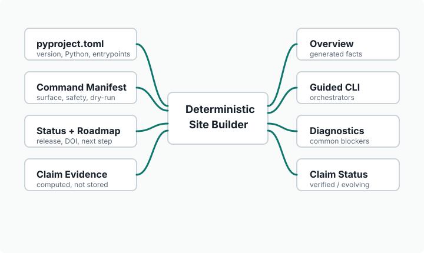

Generated repository projection
Agentic Execution Runtime
Formerly Agentic Project Kit. A local runtime for keeping long AI-assisted repository work grounded in contracts, gates, evidence and handoffs.

Why
Repository Memory
Long LLM projects lose time when context lives in chat history. The Kit makes the repository the durable project memory: current state, handoff packages, command manifests, gates, reports and release evidence are inspectable before new work starts.
Install
Start Locally
python -m pip install agentic-project-kit
The public PyPI package is available. Git is still a system prerequisite for agentic-kit init and Git-backed workflows; pip cannot install Git portably. After installation, run agentic-kit --version, then choose agentic-kit init for a new governed repository or agentic-kit workspace adopt for an existing one.
Current State
Generated Status
Latest substantive work: See docs/STATUS.md for current repository state.
Next safe step: See docs/handoff/CURRENT_HANDOFF.md for current handoff guidance.
Architecture
Runtime Structure
The public site is a projection, not a new authority. Package metadata, release state, command surfaces, safety metadata and claim status are derived from repository sources during the build.
- Manifest identity
2ab1c7c2a951- Reproduced manifest
2ab1c7c2a951- Identity verified
true- Build commit
docs-pages-fallback
CLI
Normal Lifecycle
agentic-kit initCreate a governed project skeleton with selected profiles and policy packs.agentic-kit workspace adoptAnalyze an existing repository without writing workspace files.agentic-kit workspace initPlan or create a bounded operating-layer workspace.agentic-kit workspace dpa-intakeRun the deterministic DPA repository-intake orchestration.agentic-kit workspace upgradePlan or run deterministic workspace manifest schema upgrades.agentic-kit work startStart a human patch/slice workflow with the safe standard startup sequence.agentic-kit work recoverRun safe recovery/status commands after interrupted work.agentic-kit workflow goRequest the configured workflow and run one bounded step.
Diagnostics
Common Blockers
agentic-kit audit-status-current-stateAudit STATUS.md current-state claims against handoff, release, and origin/main state.agentic-kit check-docsRun agentic-kit check-docs.agentic-kit docs-auditRun the umbrella documentation-system audit.agentic-kit doctorRun a compact project health check.agentic-kit workflow statusPrint the current workflow state and bounded evidence pointers.agentic-kit workflow-guard checkRun agentic-kit workflow-guard check.
GUI
Manifest Driven
The GUI entry point is shown only through claim evidence, and command grouping follows the manifest surface projection instead of a separate hand-maintained command list.
Communication
Handoff First
Successor handoff packages, transfer closeout, remote work evidence and copy-and-paste bridges are part of the governed workflow. The current package is regenerated by Kit commands after merges.
Evidence Status
Claims
Verified now
cli-entry-pointThe package provides the agentic-kit command-line interface.command-manifest-synchronizationThe public command catalog is generated from the current command manifest and checked for synchronization.generated-command-catalogThe website command catalog is generated from the Kit's current command manifest.package-versionThe website package version is projected from pyproject.toml.public-source-install-documentedThe GitHub source projection remains documented for unreleased fixes and Kit development.pypi-package-installableDirect PyPI installation with python -m pip install agentic-project-kit is available for arbitrary users.python-requirementThe website Python requirement is projected from pyproject.toml.
Available but evolving
artifact-gc-dry-runagentic-kit artifact-gc supports dry-run behavior.gui-entry-pointThe package provides the agentic-kit-gui graphical entry point.pypi-trusted-publishing-readyPyPI and TestPyPI publication are prepared through separate gated Trusted Publishing automation paths.successor-handoff-packageThe Kit can produce a structured successor handoff package for continuing work in another session or model.workspace-adopt-read-onlyagentic-kit workspace adopt inspects without writing.workspace-init-preview-executeagentic-kit workspace init previews changes before explicit execution.
Planned
- No planned public claims are currently declared.
Not claimed
- Global DPA conformance for arbitrary foreign repositories is not claimed.
- Remote target-CI validation is not claimed when the target repository reports no checks; remote adoption PR mechanics are separate from target-owned CI evidence.
- Post-fix PyPI validation is not claimed until a later package is published and installed again from PyPI.
- Full GUI parity with every CLI command is not claimed.
- Live GitHub Pages publication depends on either GitHub Actions Pages deployment or the generated docs-source fallback being current.
- Concept DOI
10.5281/zenodo.20101359- Primitives
102- Command groups
35- Project direction
active- Required claims
7